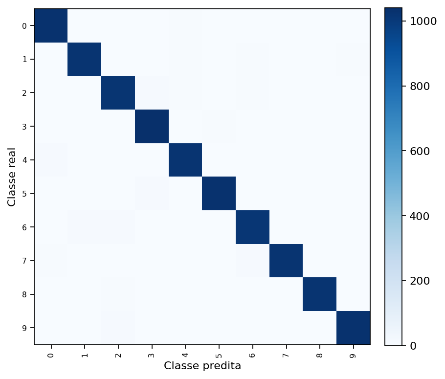
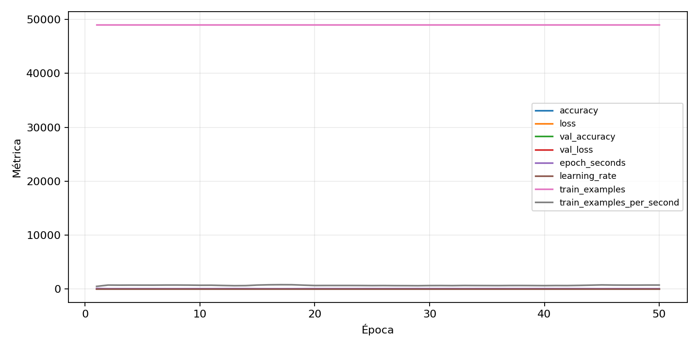

| n_samples | 10500 |
|---|---|
| loss | 0.12001968175172806 |
| accuracy | 0.9766666666666667 |
| balanced_accuracy | 0.9766666666666666 |
| macro_f1 | 0.9766693725506286 |


| Índice | Classe | Suporte | Precisão | Recall | F1 |
|---|---|---|---|---|---|
| 0 | 0 | 1050 | 0.9772511848341232 | 0.981904761904762 | 0.9795724465558195 |
| 1 | 1 | 1050 | 0.9751908396946565 | 0.9733333333333334 | 0.9742612011439465 |
| 2 | 2 | 1050 | 0.9658767772511848 | 0.9704761904761905 | 0.9681710213776722 |
| 3 | 3 | 1050 | 0.9710820895522388 | 0.9914285714285714 | 0.9811498586239397 |
| 4 | 4 | 1050 | 0.9668560606060606 | 0.9723809523809523 | 0.9696106362773029 |
| 5 | 5 | 1050 | 0.9791073124406457 | 0.981904761904762 | 0.9805040418449833 |
| 6 | 6 | 1050 | 0.9722488038277513 | 0.9676190476190476 | 0.9699284009546539 |
| 7 | 7 | 1050 | 0.9855212355212355 | 0.9723809523809523 | 0.9789069990412272 |
| 8 | 8 | 1050 | 0.9903100775193798 | 0.9733333333333334 | 0.9817483189241115 |
| 9 | 9 | 1050 | 0.9837786259541985 | 0.981904761904762 | 0.9828408007626311 |
{"adapter":"kmnist","balance_mode":"all_raw","class_names":["0","1","2","3","4","5","6","7","8","9"],"dataset":"kmnist","dataset_options":{},"dataset_root":"/home/msduda/datasets-tcc/kmnist","native_channels":1,"normalization":"unit_interval","num_classes":10,"protocol":{"checkpoint_monitor":"val_macro_f1","dtype_policy":"mixed_float16","early_stopping":{"patience":50,"restore_best_weights":true},"evaluation_augmentation":false,"input_channels":"native","optimizer":"Adam","pretrained_weights":false,"reduce_lr_on_plateau":{"factor":0.3,"min_lr":1e-07,"patience":50},"resize":"proportional_padding","test_time_augmentation":false,"training_from_scratch":true},"seed":42,"source_fingerprint":"8928d478d8d23938a73b4f4a92c407bf3d74beff1e0e67e3644d6ecdc30cf828","source_manifest":{"class_names":["0","1","2","3","4","5","6","7","8","9"],"joined_samples":70000,"metadata":{"layout":"kmnist-component-npz"},"name":"kmnist","native_channels":1,"source_path":"/home/msduda/datasets-tcc/kmnist","splits":{"test":10000,"train":60000},"target_size":64},"target_size":64,"test_fraction":0.15,"train_fraction":0.7,"training":{"augmentation":{"brightness_delta":0.0,"contrast_lower":1.0,"contrast_upper":1.0,"cutout_max_frac":0.0,"cutout_prob":0.0,"flip_lr":false,"noise_std":0.0,"translate_frac":0.0,"zoom_max":1.0,"zoom_min":1.0},"batch_size":240,"default_image_size":64,"dtype_policy":"mixed_float16","early_stopping_patience":50,"extra_fraction":0.0,"image_size_overrides":{"gtsrb":128},"keras_verbose":1,"learning_rate":0.0003,"max_epochs":50,"preprocess_cache_max_mib":0,"reduce_lr_factor":0.3,"reduce_lr_min_lr":1e-07,"reduce_lr_patience":50,"shuffle_buffer_max_mib":0},"validation_fraction":0.15}
{"epochs_completed":50,"epochs_recorded":50,"evaluation_seconds":23.69241731099919,"fit_seconds_current_attempt":4341.3073829410005,"max_epoch_seconds":98.620417439,"max_epochs":50,"mean_epoch_seconds":72.0559169611,"mean_train_examples_per_second":684.9859675196415,"median_train_examples_per_second":661.4697667471223,"min_epoch_seconds":60.73025450199975,"selected_checkpoint":"/mnt/e/tcc-benchmark/outputs/kmnist-alldata-noaug-batch-sweep-2026-08-06/batch-240/kmnist/runs/kmnist__unit_interval__all_raw__seed-42/checkpoints/best.keras","total_seconds":3602.7958480549996,"training_seconds":3602.7958480549996,"wall_seconds_current_attempt":4371.379676253}
{"elapsed_seconds":4371.438708252,"event_counts":{"data_preparation_end":1,"data_preparation_start":1,"epoch_end":50,"evaluation_end":1,"evaluation_start":1,"fit_end":1,"fit_start":1,"periodic":857,"run_completed":1,"train_start":1},"generated_at":"2026-08-07T18:10:51.860+00:00","gpu_backend":"pynvml","interval_seconds":5.0,"metrics":{"cpu_percent":{"count":915,"max":16.6,"mean":12.48360655737705,"min":0.0,"p50":12.7,"p95":15.4},"disk_data_free_bytes":{"count":915,"max":998271352832.0,"mean":998271287560.1136,"min":998271287296.0,"p50":998271287296.0,"p95":998271287296.0},"disk_data_percent":{"count":915,"max":2.7,"mean":2.7,"min":2.7,"p50":2.7,"p95":2.7},"disk_data_total_bytes":{"count":915,"max":1081101176832.0,"mean":1081101176832.0,"min":1081101176832.0,"p50":1081101176832.0,"p95":1081101176832.0},"disk_data_used_bytes":{"count":915,"max":27837534208.0,"mean":27837533943.886337,"min":27837468672.0,"p50":27837534208.0,"p95":27837534208.0},"disk_output_free_bytes":{"count":915,"max":207254740992.0,"mean":207241571214.9683,"min":207240695808.0,"p50":207241113600.0,"p95":207241965568.0},"disk_output_percent":{"count":915,"max":79.3,"mean":79.3,"min":79.3,"p50":79.3,"p95":79.3},"disk_output_total_bytes":{"count":915,"max":1000186310656.0,"mean":1000186310656.0,"min":1000186310656.0,"p50":1000186310656.0,"p95":1000186310656.0},"disk_output_used_bytes":{"count":915,"max":792945614848.0,"mean":792944739441.0317,"min":792931569664.0,"p50":792945197056.0,"p95":792945517772.8},"elapsed_seconds":{"count":915,"max":4371.368503,"mean":2188.6858855519126,"min":0.041469,"p50":2187.351304,"p95":4172.3043124},"gpu_count":{"count":915,"max":1.0,"mean":1.0,"min":1.0,"p50":1.0,"p95":1.0},"gpu_memory_percent":{"count":915,"max":64.86144065856934,"mean":58.83457058765849,"min":53.36117744445801,"p50":59.98802185058594,"p95":61.005496978759766},"gpu_memory_total_bytes":{"count":915,"max":8589934592.0,"mean":8589934592.0,"min":8589934592.0,"p50":8589934592.0,"p95":8589934592.0},"gpu_memory_used_bytes":{"count":915,"max":5571555328.0,"mean":5053851130.963935,"min":4583690240.0,"p50":5152931840.0,"p95":5240332288.0},"gpu_temperature_c":{"count":915,"max":56.0,"mean":47.74098360655738,"min":42.0,"p50":47.0,"p95":54.0},"gpu_utilization_percent":{"count":915,"max":74.0,"mean":36.49180327868852,"min":2.0,"p50":35.0,"p95":57.0},"process_cpu_percent":{"count":915,"max":213.5,"mean":161.72754098360656,"min":0.2,"p50":165.3,"p95":198.63},"process_read_bytes":{"count":915,"max":15552512.0,"mean":15433889.15409836,"min":7933952.0,"p50":15552512.0,"p95":15552512.0},"process_rss_bytes":{"count":915,"max":3923742720.0,"mean":3624857470.181421,"min":1030033408.0,"p50":3686350848.0,"p95":3879397785.6},"process_vms_bytes":{"count":915,"max":49761603584.0,"mean":49356371544.97049,"min":39580434432.0,"p50":49477074944.0,"p95":49626337280.0},"process_write_bytes":{"count":915,"max":1392640.0,"mean":1374205.7617486338,"min":4096.0,"p50":1392640.0,"p95":1392640.0},"ram_available_bytes":{"count":915,"max":15542411264.0,"mean":13108229564.292896,"min":12807217152.0,"p50":13053489152.0,"p95":13538748416.0},"ram_percent":{"count":915,"max":22.9,"mean":21.128524590163934,"min":6.5,"p50":21.5,"p95":22.7},"ram_total_bytes":{"count":915,"max":16619085824.0,"mean":16619085824.0,"min":16619085824.0,"p50":16619085824.0,"p95":16619085824.0},"ram_used_bytes":{"count":915,"max":3811868672.0,"mean":3510856259.7071037,"min":1076674560.0,"p50":3565596672.0,"p95":3770872627.2}},"sample_count":915,"schema_version":1}